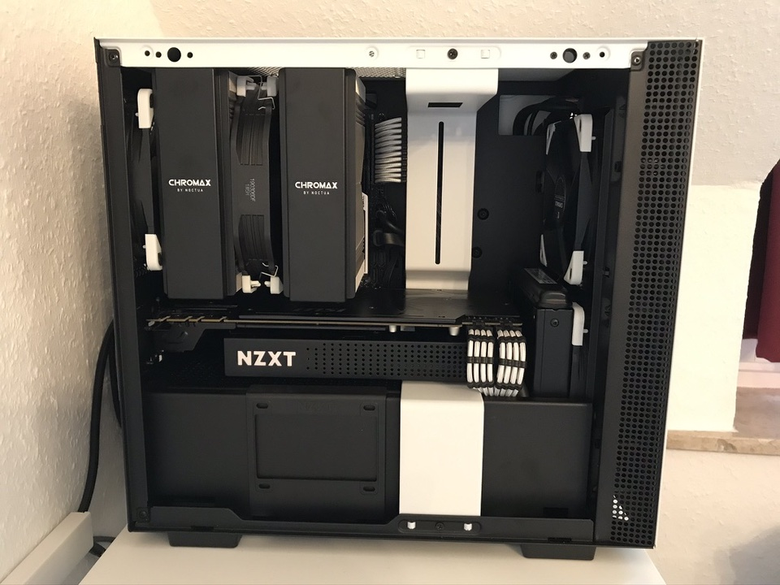
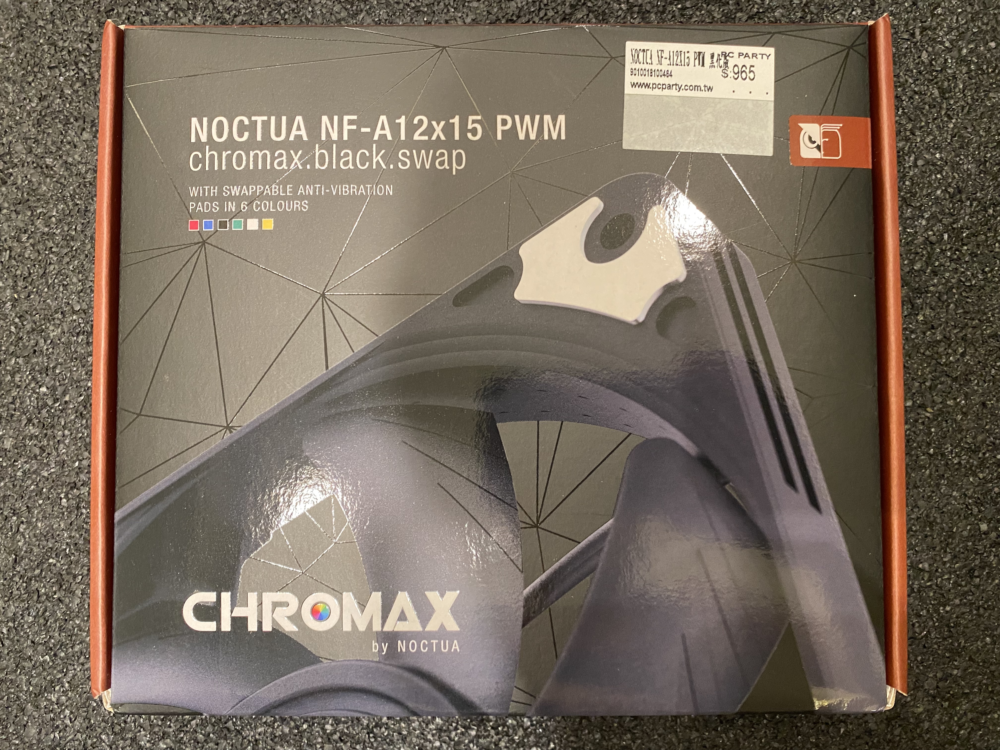
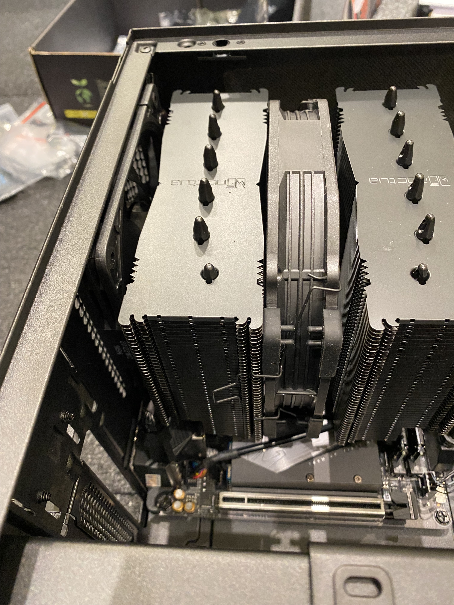
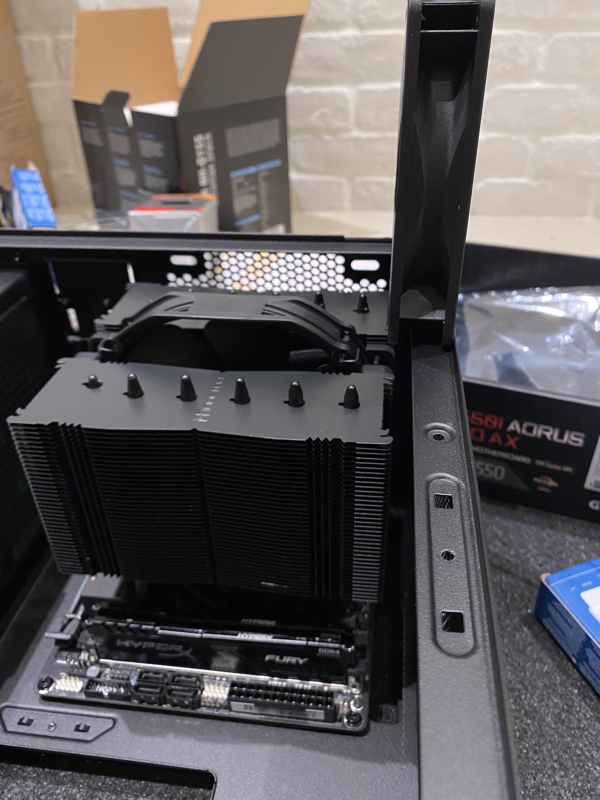
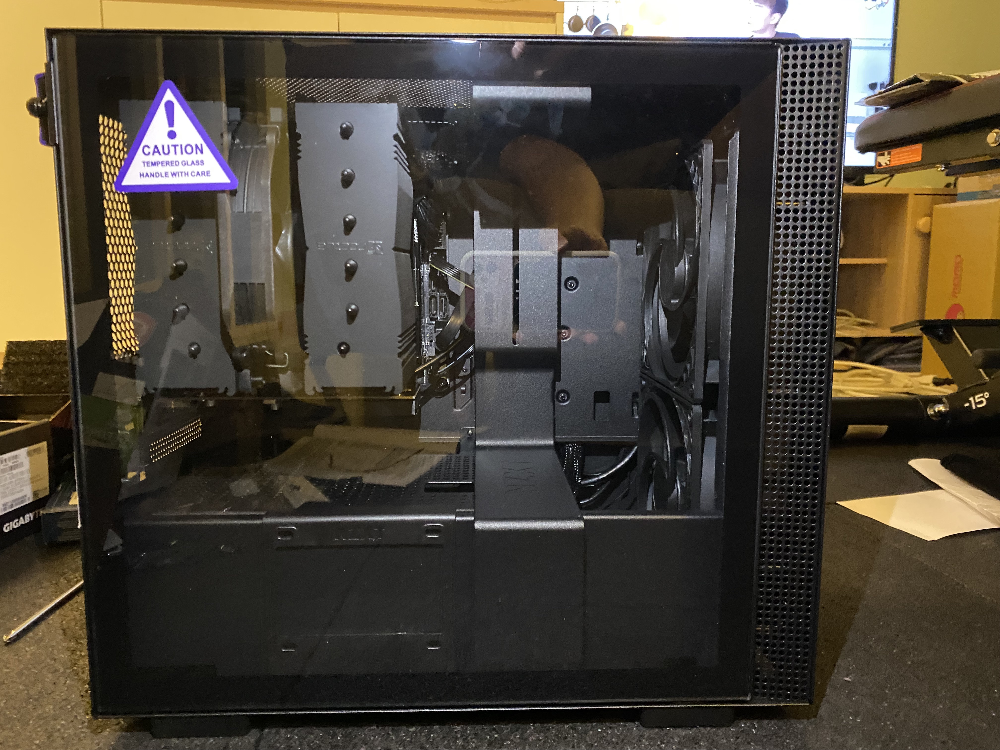

Yocto 編譯主機零組件挑選及組裝

背景
需求：程式編譯，主要編譯 Yocto（低配版 Build Code Server）
預算：4.5 萬
零件挑選
中央處理器（CPU）
挑選 CPU 有幾個重點，依優先順序分別為：售價（預算）、效能、功耗（耗電量、廢熱量）、C/P 值。
OpenBenchmarking 上搜集了各型號 CPU 的 Linux Kernel 編譯時間，可用以評估各型 CPU 多核心編譯的效能：

伺服器版的 CPU 太貴，直接跳過。AMD Ryzen™ 9 5950X、AMD Ryzen™ 9 3950X 及 Intel® Core™ i9-10980XE 這三顆 CPU 是目前家用主機的頂規。
Intel 這顆效能表現與 AMD 這二顆相伯仲，但功耗高很多，所以先剔除。再來因為 5950X 和 3950X 這二顆都缺貨，也只能放棄。繼續往下的選擇中，AMD Ryzen™ 9 5900X 效能相差不大，有貨，且 C/P 值比 5950X、3950X 都高很多，因此沒有什麼懸念，就選它了。
主機板
相容 AMD Ryzen™ 9 5900X AM4 規格且有現貨的晶片組有 B450、X470、A520、B550 和 X570。符合目前需求的最便宜選擇是 B450，但可惜目前 Mini-ITX 的版本缺貨，只能往更高階看。因為想保留未來插高階顯示卡和 PCIe 4.0 SSD 的空間，所以從 B550 和 X570 之間選了比較便宜的 B550。


記憶體
依照過去編譯 AOSP 的經驗，編譯所需的記憶體大小，約略是 CPU 執行緒數多少條，記憶體就要多少 GB。除此之外，我也先在舊的電腦上，參考這個網頁，分別在掛上 Swap 和卸載 Swap 的情形下實際編譯 Yocto 專案，來比較記憶體的使用狀況。
測試機器：
- Intel® Core™ i7-8700K (6 核、12 緒)
1 | $ lscpu |
- 記憶體 16 GB
1 | $ free |
- 有掛載 Swap：
掛 Swap：清記憶體：1
swapon -a
開始搜集記憶體使用狀況：1
sync; echo 3 | sudo tee /proc/sys/vm/drop_caches
進行編譯。1
free -s 1 | tee memory-usage-log-swapon.txt
完成後確認，編譯過程中最低可用記憶體剩餘量：及最高 Swap 使用量：1
grep Mem memory-usage-log-swapon.txt | awk '{print $7}' | sort -n | head -n 1
最低可用記憶體剩餘量為 5.46 GB，最高 Swap 使用量為 321.75 MB。因此在 12 緒的 CPU 下編譯我的 Yocto 專案，搭配 16 GB 的記憶體是足夠的。本次編譯耗時 1:06:13.27。1
grep Swap memory-usage-log-swapon.txt | awk '{print $3}' | sort -nr | head -n 1
- 無掛載 Swap：
卸 Swap：清記憶體：1
swapoff -a
開始搜集記憶體使用狀況：1
sync; echo 3 | sudo tee /proc/sys/vm/drop_caches
進行編譯。1
free -s 1 | tee memory-usage-log-swapoff.txt
完成後確認，編譯過程中最低可用記憶體剩餘量：最低可用記憶體剩餘量為 5.24 GB，與開頭的經驗，編譯中 1 條執行緒約需 1 GB 相符。本次編譯耗時 1:06:10.88。1
grep Mem memory-usage-log-swapoff.txt | awk '{print $7}' | sort -n | head -n 1
AMD Ryzen™ 9 5900X AM4 是 12 核 24 緒，因此 32 GB 的記憶體應足夠使用。同樣大小的記憶體也有價差，時脈、CL 值、會不會發光、品牌等都有影響。這次買了 DDR4-3600 CL18，其實應該選 DDR4-3200 CL16 的就好，因為二者效能差不多，但 DDR4-3600 CL18 的價格高了近 20%。這邊預算沒有控制好。
固態硬碟（SSD）
儲存空間大一點比較方便，目前有貨的最大大小為 2 TB，WD_BLACK™ SN750 太貴，就挑了使用國產控制器（群聯）一樣五年保的 Pioneer APS-SE20Q。
顯示卡
基本上這臺電腦除了安裝 OS 以外都不會接螢幕，因此低階的即可。但仍希望起碼能推動 4K 的螢幕看影片，所以挑了 GeForce GT 1030。
機殼
目前使用的 SilverStone SG09 搭配貓頭鷹塔散，機殼尺寸和散熱效果都讓我很滿意。因為小機殼輕巧的特性，這次鎖定 Mini-ITX 的機殼。小機殼內部比較擁擠，裝高度發熱的元件要特別注意通風、散熱。參考了一些在 YouTube 上看到的機殼：

發現符合我期待的散熱方式及電源位置的只有 NZXT H210，所以就選了它。

挑選小型的機殼時，除了要注意 CPU 散熱器的高度外，還要看散熱器的體積對機殼內通風的影響。H210 的內部配置有一些亮點：
- 前進氣風扇的尺寸比後出風風扇的大，因此很容易可以達到機殼內正壓的配置。
- 風流設計看起來很合理，前方進風後方出風，中間會吹到 CPU、顯示卡和電源。
- 有附防塵濾網。
- 電源下置且有獨立空間。
- 可使用 ATX (PS/2) 標準的電源。
- 電源直接貼在背板，電源線可以直接接到電源上，不需要透過機殼自帶的電源延長線。
像這種小型的機殼，因為顯卡離機殼底部很近，因此還要注意，若機殼下方會裝風扇，其風向應與顯卡風扇的風向一致。不是所有顯卡的風扇都是往晶片方向吹的，也有反著吹的：

補充說明，我會避免選擇將電源供應器定位為主要排風元件的機殼（如後上置型的）。因為電源供應器很怕熱，長期在較熱環境中工作的電源供應器，除了壽命比較短之外，也很危險（可參見全漢官網說明）。機殼內有獨立空間可放置電源供應器是最理想的，這樣電源供應器就不會與 CPU、顯示卡等高發熱元件混在同一空間內。
CPU 散熱器
散熱器的選擇實在太多了，所以我直接在以安靜著稱的貓頭鷹裡挑。因為希望能與機殼設計的水平風流相配合，所以只看塔式散熱器。5900X 蠻熱的，需要散熱能力好一點的，同時我又不喜歡記憶體完全被散熱器遮住看不到，所以挑了 Noctua NH-D15S。
Mini-ITX 主板 + 記憶體 + NH-D15S 示意圖：
NZXT H210 + NH-D15S 示意圖：

電源供應器
電源供應器是耗材，它的供應瓦數是會衰減的。預算許可的話，就把瓦數買到 CPU + 顯卡功耗的 2 倍，這樣電源供應器在其他零件壞掉前應該都會是好的。愛護地球，在能負擔的範圍內選轉換功率高一點的。如果機殼支援 ATX 規格的電源供應器，那在電源供應器的選擇會比較多，也會比較便宜。
組裝
開車就是要開手排才熱血，電腦就是要自己裝才有靈魂。
開始前，先說明一個注意事項：除了一些非通用特殊螺絲之外，一部電腦主機裡的螺絲有 3 種不同的螺絲牙，這三種螺絲牙通常是，最粗的（kb5）鎖風扇，中等的（#6-32 UNC）鎖主機板、機殼、電源，最細的（M3）鎖硬碟。除此之外，也要注意螺絲頭，有些適合用平頭、有些適合用寬頭、有些適合用手擰的等等。詳請見維基百科 Computer case screws。

全零件合照（這邊缺了 SSD 和 後置薄扇）：

拿出工具盒，正式開始。

安裝電源供應器及機殼風扇
- 把電源供應器裝進機殼後下方

- 將 2 顆 14” 進風扇裝進機殼前方

Update
之後為防落塵，上方出風口用黑色不織布封住：


另購了貓頭鷹 NF-A12x15 薄扇 1 個裝在機殼後方出風。



Update 2
實測後發現 NF-A12x15 對降低峰值溫度沒什麼效果，同時產生了低頻的共鳴噪音，所以後來又把它拆掉了。
安裝 CPU
- 首先核對 CPU 安裝方向的標示

- 拉起 CPU 固定桿並輕輕放下 CPU

- 放下固定桿，確定 CPU 有被夾緊

安裝 NVMe SSD
補拍 SSD 照片
B550 不是所有 NVMe 插槽都是 PCIe 4.0，所以要注意一下。不過因為買的是 PCIe 3.0 的 SSD，所以也沒差。
- 從腳位判斷安裝方向
- 斜斜地插入 SSD
- 用六角套筒卸下主機板上的固定用螺母柱
- 將 SSD 壓平，並用螺母柱加以固定
- 撕開 SSD 散熱片的背膠
- 將 SSD 散熱片放至定位，並鎖上螺絲固定
安裝記憶體
- 扳開記憶體插槽二側的卡榫
- 確認記憶體插銷缺口位置
- 垂直壓下記憶體直到二側卡榫卡緊記憶體
安裝 CPU 散熱器
- 卸下原廠散熱器基座

- 留下散熱器加固背板


- 比對散熱器方向

- 安裝散熱器基座
- 點散熱膏。於 CPU 中心點上一球直徑約 0.5 cm 的量。

- 鎖上散熱鰭片

- 鎖緊散熱鰭片後，從與 CPU 的接縫處檢查散熱膏是否適量。應該要稍微有一點散熱膏被壓出來，但量不要多到會沾到主機板。

- 調整散熱器風扇方向

- 接上 CPU 散熱風扇電源

完成。可以看到 NH-D15s 給記憶體相當大的空間：


散熱鰭片的長、寬沒有超出主機板：

安裝主機板
準備放主機板進機殼時，才發現散熱鰭片會卡到這款機殼後面和上面的風扇，只好把它們拆掉。


- 接上 CPU 電源
- 將主機板放至定位，以螺絲固定

左上角的螺絲孔被 CPU 散熱鰭片擋住鎖不到，要能鎖到的話，就要先裝主機板再裝鰭片。但因為先鎖主板再裝鰭片會不能檢查散熱膏的量，加上這張主板背面有金屬框加固應該夠堅固，所以就不重做了。 - 接上其他各種電源

安裝顯示卡
低階顯卡不用額外接電源，直接插到對應的槽並鎖上機殼背板就好。

理線
理線是一個耗時也不見得做得好的工作，建議動手前先參考別人的做法。對外觀講究的話，可以另外購買高顏值的訂製線。網路上搜尋「機殼型號」 + 「Cable Management」就可以看到很多範例。


完成
最後蓋上機殼側板，就完成啦！

驗收
CPU 效能
相同專案在新電腦的編譯時間約為 35 分鐘，在上面列的 i7-8700K 舊電腦約為 66 分鐘。CPU 執行緒數加倍，時間約減半，算是符合預期。
記憶體用量
編譯過程中，這臺 24 緒的電腦可用記憶體高達 20 GB 左右，也就是說編譯過程中，有用到的記憶體約 12 GB。但在舊電腦 12 緒的 CPU 上編譯也是只用了 12 GB 左右。這個結果說明了執行緒數目和記憶體用量成比是錯誤的假設 😅
CPU 溫度
環境溫度 28 °C、空調

- 後、上出風風扇都沒裝
待機：約 33 °C
峰值：80.4 °C - 後出風風扇沒裝、上方出風口封起
待機：約 33 °C
峰值：81.9 °C

- 後出風風扇 NF-A12x15 、上方出風口封起
待機：約 33 °C
峰值：81.9 °C

由此可以看到，在這個環境溫度、機殼內配置下，上方出風口和後出風風扇對散熱的影響都不大。